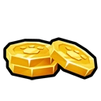
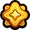
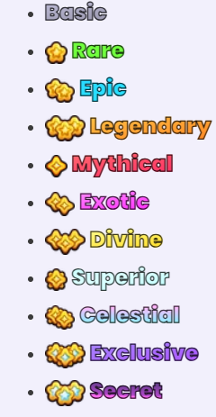

Properties
Pets are collectible companions that help the player collect  breakables.
Pet Equips
By Default, players can equip up to 3 Pets. However in the Shop, there's a Pack that gives +3 Pet Equips. Also in the Upgrades you can buy 2 Extra Pet Equips.
Rarities
 Rarities are the main way of categorizing Pets based on their rolling chances. There are currently 11 Rarities of Pets.
